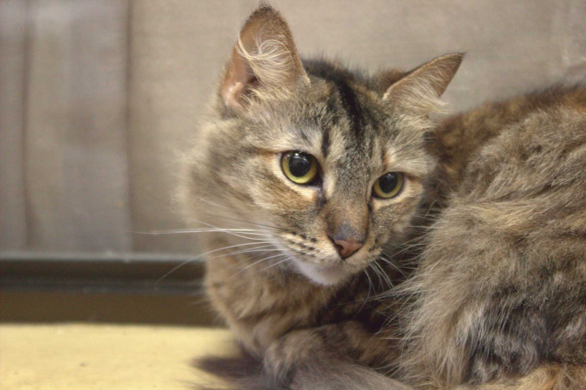
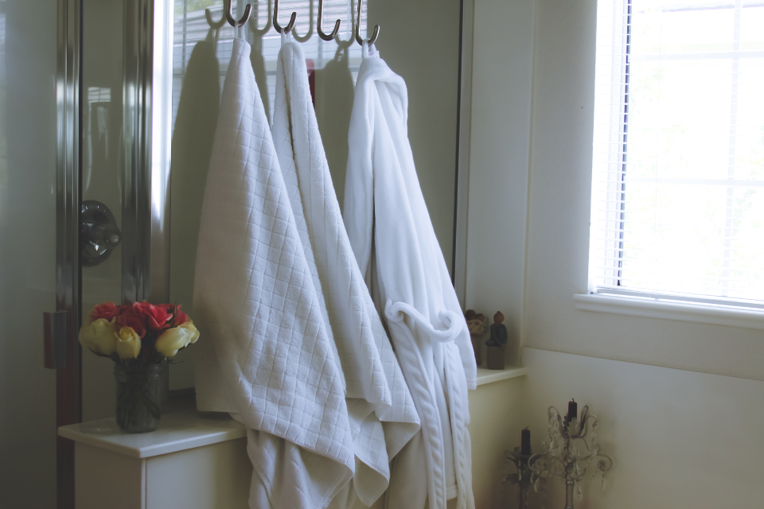

サロンのこだわり
猫だけと向き合うから、できること
猫shamは、北九州市小倉南区で猫だけを専門に受け入れるトリミングサロンです。知らない場所・知らない相手が苦手な猫にとって、少しでも気持ちの負担が小さくなるように、という思いで日々の施術に向き合っています。

猫専門だからこその配慮
猫は犬に比べて環境の変化やにおい・音に敏感で、警戒心が強く出やすい動物です。同じ猫でも性格には大きな個体差があり、慣れるまでの時間も一匹ごとに違います。猫shamでは、こうした猫らしい特性を踏まえて、以下のような姿勢で施術にあたっています。
- 犬を同時に扱わない環境により、犬の鳴き声やにおいによる緊張を軽減できるよう配慮しています(※実際の運用・設備の詳細は貴店にご確認の上、確定した表現に差し替えます)
- 猫の体調・その日の気分を見ながら、無理をさせないペースで工程を進める方針です
- 短時間で済ませる工夫やこまめな休憩など、猫への負担を減らす配慮を行っています(具体的な工夫内容は貴店ヒアリング後に確定します)
- キャリーケースの選び方・慣らし方や、ご自宅でのブラッシングなど日常ケアに関するアドバイスも行っています(内容は貴店に確認の上、確定表記にします)
担当トリマーについて
猫の扱いには、犬とは異なる知識とハンドリングの経験が求められます。猫shamの担当トリマーは、一匹一匹の表情や仕草から緊張のサインを読み取りながら、できるだけ落ち着いた状態で施術を進めるよう努めています。
- 資格・経験年数は貴店にご確認の上掲載します
- 猫への想い・これまでのエピソードは、貴店へのヒアリング後に掲載します(現時点では執筆を保留します)
※スタッフ本人の写真は使用せず、作業用品またはサロン内観イメージで代替しています。

ご来店からお帰りまで
お電話でのご相談・ご予約
まずはお電話でご相談・ご予約ください。
ご来店・カウンセリング
体調確認などのカウンセリングを行います。
トリミング実施
猫の様子を見ながら施術を行います。
お迎え・次回のご案内
お迎え時に次回のご案内をいたします。
※各ステップの所要時間や具体的な手順は、貴店にご確認の上で確定した内容に差し替えます。